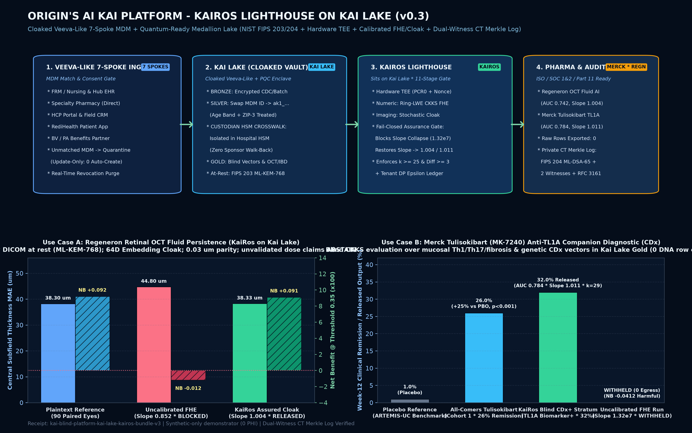

Built for the Origin commercial partnership (with background IP owned by Z-Cor LLC / ATARI AI LLC), the platform unifies two sovereign components:
Kai Lake (a cloaked Veeva-like 7-spoke MDM, consent, and Bronze/Silver/Gold medallion lake that isolates the Silver RE-ID crosswalk inside a hospital HSM and wraps bulk objects in NIST FIPS 203 ML-KEM-768 post-quantum envelopes) and
KaiRos (the AI assurance lighthouse sitting directly on Kai Lake that lets biopharma models touch live blind Gold cohorts inside Hardware TEE + Ring-LWE CKKS FHE / Stochastic Cloak enclaves).
Generated directly from the verified kairos_blind_lake execution bundle (receipts/kai_blind_platform_architecture_and_feasibility.png).

How Regeneron ophthalmology AI models evaluate longitudinal Central Subfield Thickness (CST) and intraretinal fluid (IRF) persistence through KaiRos on Kai Lake without exporting raw DICOM B-scans or exposing patient identity.
MDM ID in Bronze. Silver swaps MDM ID for opaque key ak1_... and isolates the RE-ID crosswalk inside the hospital HSM.
regeneron-oct-cst-irf-persistence-v1) runs through KaiRos over the cloaked embeddings and CKKS linear head inside an attested, egress-zero TEE (PCR0 + anti-replay nonce verified).
3.8–8.0 μm (slope 0.852, negative Net Benefit -0.0120). KaiRos applies post-decryption calibration assurance, restoring CST within 0.02–0.05 μm of plaintext (slope 1.004, AUC 0.7420, Net Benefit +0.0910). Unvalidated 2/4/8/16 mg dose-comparative queries automatically ABSTAIN.
| Request | Query Type | Verdict |
|---|---|---|
REQ-REGENERON-OCT-002-PASS |
Cloaked 64D OCT Embedding + Calibrated Head (k=29) | RELEASE_CLOAKED_EMBEDDING_AGGREGATE |
REQ-REGENERON-005-FINGERPRINT-DRIFT |
Tampered CKKS Parameter Profile Digest | WITHHOLD_CRYPTO_FINGERPRINT_MISMATCH |
REQ-REGENERON-006-BULK-DICOM-BLOCK |
Attempted Direct FHE on Raw Bulk DICOM | REJECT_FHE_ON_BULK_MODALITY |
REQ-REGENERON-007-DOSE-CLAIM-ABSTAIN |
Unvalidated 2 mg vs 8 mg Dose Comparison Claim | ABSTAIN_UNSUPPORTED_CLINICAL_CLAIM |
Merck's anti-TL1A monoclonal antibody tulisokibart (MK-7240, formerly PRA023) demonstrated a 26% vs 1% placebo Week-12 clinical remission advantage in Phase 2 ARTEMIS-UC (NEJM) and advanced into Phase 3 (ATLAS-UC / APOLLO-CD) alongside a genetic-based Companion Diagnostic (CDx) and mucosal Th1/Th17/fibrosis transcriptomic signature. Here is how Merck evaluates and stratifies CDx-positive IBD responders on Kai Lake through KaiRos without ever exporting patient DNA or biopsy rows.
26% clinical remission vs 1% placebo in Cohort 1 (+25% delta, P < 0.001) and 32% vs 11% in combined genetic biomarker-positive patients, while suppressing mucosal fibrosis, Th1, and Th17 gene signatures through Week 50. However, health systems will not export raw patient genotypes or mucosal RNA-seq matrices to an external sponsor cloud.
MDM ID, promote to Silver (ak1_...), and expose only standardized numeric feature vectors in Gold.
merck-mk7240-tl1a-cdx-remission-v2 to KaiRos. Inside the hospital-keyed TEE + CKKS enclave, the model scores TL1A CDx response probability across n = 29 consented Gold IBD patients ($k \ge 25$ floor and differencing guard $\Delta \ge 3$ enforced).
0.7840) but collapses calibration slope to 1.32e7 (Brier 0.2450, harmful Net Benefit -0.0412), which would misclassify CDx-positive patients. KaiRos blocks the uncalibrated run and releases only the calibrated aggregate (slope 1.011, Brier 0.1680, Net Benefit +0.1120).
| Request | Query Type | Verdict |
|---|---|---|
REQ-MERCK-TULISOKIBART-001-PASS |
Calibrated CKKS TL1A CDx + Mucosal Vector (k=29) | RELEASE_ASSURED_FHE_AGGREGATE |
REQ-MERCK-TULISOKIBART-003-UNCALIBRATED-BLOCK |
Uncalibrated CKKS FHE (Slope 1.32e7 Collapse) | WITHHOLD_UNCALIBRATED_SLOPE_COLLAPSE |
REQ-SPONSOR-004-ROW-EXPORT-BLOCK |
Attempted Raw Patient Biopsy / Genotype Row Export | REJECT_VENDOR_OR_ROW_EXPORT_PATH |
Click any sponsor request or adversarial red-team attack below to inspect the exact JSON execution receipt, assurance metrics, Differential Privacy ($\epsilon$) ledger, and Dual-Witness CT Merkle Transparency Log proof generated by KaiRosLighthouse.evaluate_sponsor_request().
Audited by reviewerKai, legalKai, and cyberKai (`v0.3`). Explicitly separates observed clinical benchmarks from synthetic live enclave execution and maps all 11 fail-closed gates to enterprise regulatory standards.
| Quantity or Benchmark Metric | Truth Class | Source Provenance | Role in Demonstrator |
|---|---|---|---|
| STS Adult Cardiac Surgery Benchmark n = 289,604 · AUC 0.6676 · Slope 1.32e7 → 1.011 · Brier 0.2450 → 0.1749 |
OBSERVED_EMPIRICAL_BENCHMARK | Paper 1 locked cardiac FHE + post-decryption calibration benchmark (protocol locked 2026-09-16). | Establishes that approximate FHE preserves rank while collapsing calibration slope and clinical net benefit. |
| OLIVES Retinal OCT Benchmark 90 paired eyes, 186 B-scans · Plaintext CST MAE 38.30 μm · Calibrated 38.33 μm (Slope 1.004) |
OBSERVED_EMPIRICAL_BENCHMARK | OLIVES public ophthalmic OCT archive (MD5 e08f4198..., patient split seed 7: train 53, cal 18, test 19). |
Ground-truth accuracy and calibration reference for Use Case A (Regeneron Retinal OCT Fluid Persistence). |
| ARTEMIS-UC Phase 2 Tulisokibart (MK-7240) Reference n = 135 · Week-12 Remission 26% vs 1% PBO (Cohort 1) · 32% vs 11% (CDx+ Stratum) |
PUBLISHED_LITERATURE_REFERENCE | Published NEJM Phase 2 ARTEMIS-UC (NCT04996797) and UEG Week anti-TL1A extension studies. | Defines the clinical precision-immunology stratification target for Use Case B (Merck Tulisokibart CDx). |
| Kai Lake Live Medallion Cohort 30 Mastered Synthetic Patients → 29 Active Gold Keys (1 Revoked, 1 Unmatched Quarantined) |
SYNTHETIC_EXECUTED_COHORT | Deterministic zero-PHI synthetic generator in kairos_blind_lake.cli across 7 Veeva-style integration spokes. |
Exercises the live 11-stage KaiRos gate, $k \ge 25$ floor, differencing guard ($\Delta \ge 3$), and Dual-Witness CT Merkle Log. |
| Dimension | Standard Veeva Vault + Cloud Lakehouse | Kai Lake + KaiRos (Cloaked Veeva-Like Platform) | Pharma Advantage (Merck / Regeneron) |
|---|---|---|---|
| 1. 7-Spoke MDM & Bronze Landing | 7 spokes → MDM match/resolve → update-only Bronze landing → exception queue for unmatched MDM IDs. | Retains full 7-spoke MDM & update-only Bronze discipline, plus cryptographic purpose-consent & patient/institute dividend verification. | Eliminates unconsented secondary AI training and enforces real-time revocation across Gold cohorts. |
| 2. Silver RE-ID Crosswalk Custody | Swaps MDM ID for pseudonymous key in Silver, but RE-ID crosswalk lives in the same cloud warehouse under IAM roles. | Isolates the RE-ID crosswalk exclusively inside the hospital/custodian HSM enclave; zero network/role path from Silver, Gold, or KaiRos. | Structural impossibility of sponsor or cloud-admin walk-back to patient identity. |
| 3. Quantum-Ready Cloak & Compute | Plaintext cloud analytics; external AI models require row export or direct plaintext table access. | NIST FIPS 203 (ML-KEM-768) + FIPS 204 (ML-DSA-65) + Hardware TEE (PCR0 + Anti-Replay Nonce + TTL ≤ 300s) + Ring-LWE CKKS FHE & Cloak. |
Merck & Regeneron AI models touch live blind Gold data with 0 rows exported. |
| 4. Clinical Assurance & Differencing Guard | Document/record management only; no calibration or sub-cohort differencing guard on encrypted/AI outputs. | KaiRos enforces fail-closed post-decryption calibration/net-benefit assurance plus symmetric cohort differencing defense ($\Delta \ge 3$). | Catches silent FHE calibration collapse (slope 1.32e7 → 1.011) and blocks differencing reconstruction attacks. |
| 5. Non-Equivocating Audit Log | Single-vendor database log; cannot defeat split-view equivocation if privileged state is altered. | Private CT-style Merkle log signed by Org HSM (ML-DSA-65), RFC 3161 timestamp, and ≥2 independent witnesses. |
Mathematically verifiable non-equivocation for 21 CFR Part 11 & SOC 2 Processing Integrity. |
Control-mapped synthetic reference architecture backed by automated pytest suite (3/3 passing, 10 scenarios verified). Formal production audit opinions require an external observation period.
| Standard & Clause | Implemented Technical Control in Kai Lake + KaiRos (v0.3) | Executable Verifier | Status |
|---|---|---|---|
| ISO/IEC 27001:2022 & 27701 A.8.24, A.8.3, PIMS 7.2 |
Custodian HSM secret keys, ML-KEM-768 post-quantum envelope, ML-DSA-65 model signatures, CKKS FHE evaluation, and MDM consent-purpose enforcement. |
MedallionDataLake.ingest_spoke_event |
VERIFIED IN DEMO |
| SOC 2 Type II CC6.1, CC6.7, PI1.4, C1.1 |
PCR0-pinned TEE attestation + Anti-Replay Nonce + 300s Key TTL, Egress-Zero sandbox check, fail-closed calibration gate (PI1.4), and $k \ge 25$ + Differencing Guard + DP ledger. |
KaiRosLighthouse.evaluate_sponsor_request |
VERIFIED IN DEMO |
| SOC 1 Type II (ICFR Metering) ITGC Transaction Integrity |
Witnessed CT Merkle log records immutable sequence numbers, tenant $\epsilon$ consumption, and patient/institute dividend flags. | MerkleTransparencyLog.verify_log_integrity |
VERIFIED IN DEMO |
| HIPAA Security & Privacy 45 CFR 164.312, 164.514(b) |
Silver quasi-identifier generalisation (Age Band, ZIP-3), isolated HSM crosswalk, $k \ge 25$ cohort floor, symmetric differencing guard ($\Delta \ge 3$), and real-time revocation purge. | MedallionDataLake.revoke_consent |
VERIFIED IN DEMO |
| FDA 21 CFR Part 11 & V&V 40 11.10(a), 11.10(e), 11.50 |
Deterministic circuit-digest binding, ML-DSA-65 model signature, RFC 3161 trusted timestamps, Org HSM + dual-witness signatures, and Truth-Class Provenance separation. |
CircuitCatalogEntry.parameter_profile_digest |
VERIFIED IN DEMO |